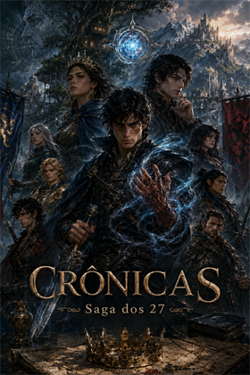

Abrir página da Crônica I.
Histórias fantasiosas
Crônicas
Explore o universo dos 27, com magia, guerra, morte e reviravoltas.
Conteúdo adulto/fantasia sombria: violência, guerra, trauma, abuso de poder, linguagem forte e temas adultos.

Escolha o capítulo
Lista de leitura
Abrir página da Crônica II.
Abrir página da Crônica III.
Novas crônicas serão listadas aqui quando estiverem prontas.